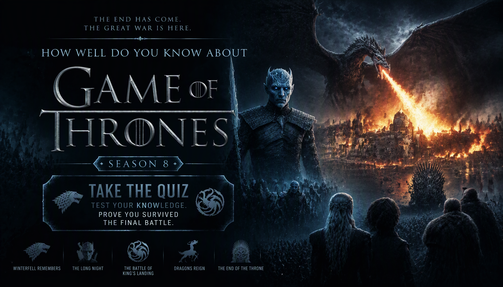

GAME OF THRONES • SEASON 8 • TV TRIVIA
Game of Thrones Season 8 Quiz
Think you know Game of Thrones Season 8? Test your knowledge of Winterfell, the Night King, Daenerys Targaryen, the Golden Company, the battle for King's Landing and the series finale.
Each question has four options and only one correct answer. Remember the battles, characters, alliances and shocking moments of the final season to earn your place among the great minds of Westeros.
This quiz contains major plot details and spoilers from Game of Thrones Season 8.


ABOUT THE QUIZ
The Game of Thrones Season 8 Quiz is a 35-question trivia challenge about the final season of the fantasy series. It tests your memory of the events leading from the arrival at Winterfell to the fate of the Iron Throne.
Questions cover the Battle of Winterfell, the Night King, Arya Stark, Daenerys Targaryen, the Golden Company, the destruction of King's Landing and the series finale.
Game of Thrones Season 8 Details
Series: Game of Thrones
Season: 8
Episodes: 6
Opening Episode: Winterfell
Final Episode: The Iron Throne
Key Locations: Winterfell, King's Landing and the Dragonpit
Story: The living face the Army of the Dead while the struggle for the Iron Throne reaches its conclusion.
WHAT THIS QUIZ COVERS
The quiz includes questions about major events, character decisions, memorable dialogue, weapons, battles and details from all six episodes of Season 8.
Winterfell and the Threat Beyond the Wall
Recall the reunions at Winterfell, the arrival of Daenerys, the Night King's approach and the preparations for the Battle of Winterfell.
The Battle of Winterfell
Test your knowledge of Arya Stark, the Night King, Lyanna Mormont, dragonglass weapons and the defence of Winterfell.
The Last of the Starks and The Bells
Remember Rhaegal's death, Missandei's final words, the Golden Company, the surrender of King's Landing and the destruction caused by Drogon.
The Iron Throne
Questions cover Daenerys's fate, Bran's selection as king, Sansa's future, Arya's voyage and the new small council.
HOW THE QUIZ WORKS
The quiz contains 35 questions. Every question has four possible choices, but only one answer is correct.
Each correct answer gives you 1 point, while an incorrect answer gives you 0 points. Your final score is converted into a percentage out of 100%.
Your result reflects how well you remember the characters, battles, decisions and memorable details of Game of Thrones Season 8.
Quiz Navigation
Starting the quiz
Select START QUIZ on the opening screen to begin. The first question appears with four possible answers.
Selecting an answer
Select the option you believe is correct. Your choice is saved, and the quiz automatically advances to the next question shortly afterward.
Next and Back buttons
Use Next to move forward or Back to revisit a previous question. Your selected answers are saved as you move through the quiz, so you can review or change them.
Finishing the quiz
Answer all 35 questions. On the final question, submit your answers to view your score, percentage and Westeros knowledge result.
Try Again and Challenge Friends
Select TRY AGAIN to replay the quiz. You can also use SHARE MY RESULT or CHALLENGE YOUR FRIENDS to share your result.
FAQ
How many questions are in the quiz?
There are 35 questions, each with four possible choices and one correct answer.
What is the maximum score?
The maximum score is 100%. Each correct answer contributes 1 point before the result is converted into a percentage.
What topics are covered?
The quiz covers Winterfell, the Battle of Winterfell, the Night King, Daenerys Targaryen, the Golden Company, King's Landing and the series finale.
Can I take the quiz again?
Yes. Select TRY AGAIN after viewing your result to start another attempt.
Can I challenge my friends?
Yes. Use CHALLENGE YOUR FRIENDS after completing the quiz to share it with others.
Spoiler Warning
This quiz contains spoilers for Game of Thrones Season 8, including the Battle of Winterfell, character deaths, the destruction of King's Landing and the fate of the Iron Throne.
Consider watching the final season before taking the quiz if you want to avoid spoilers.